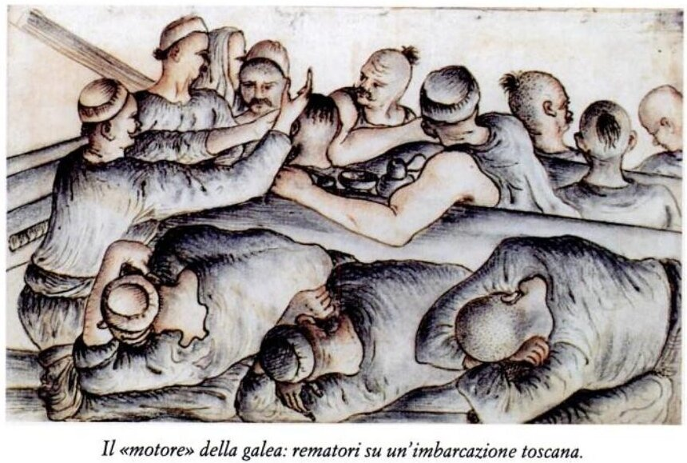
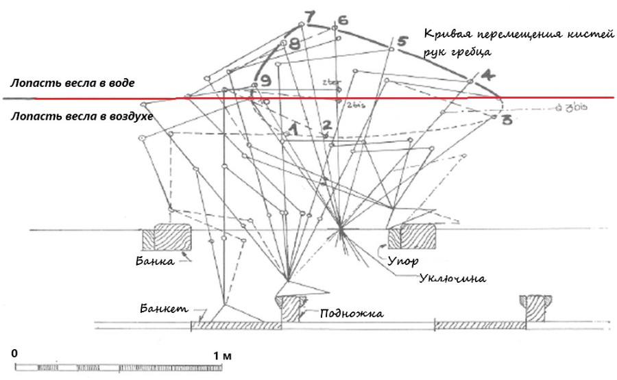
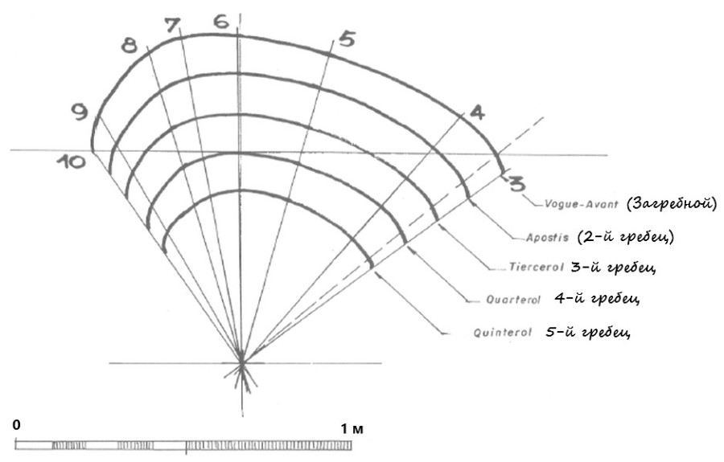
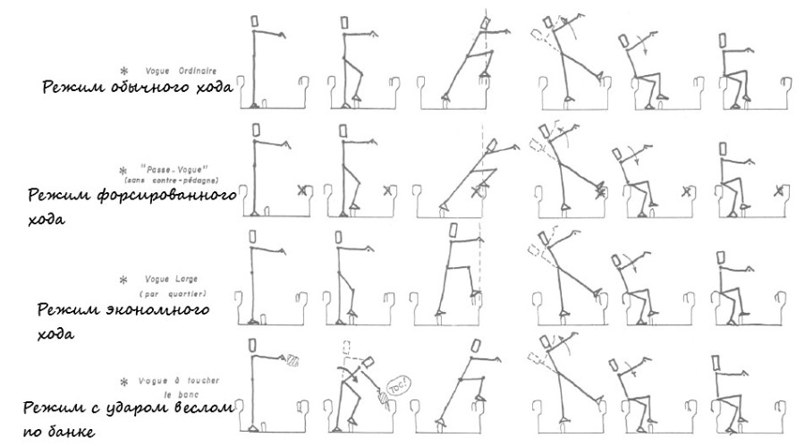
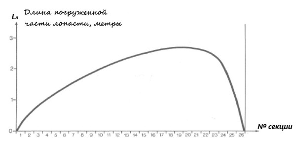
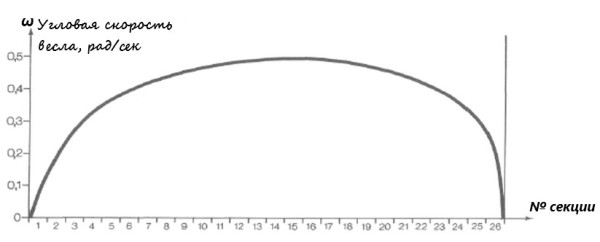

Гребцы и весла
На галерах огромных и смрадных,
В потном зное и мраке сыром,
Под шипенье бичей беспощадных
Мы склонялись над грузным веслом.
Э. Г. Багрицкий. Моряки (1923)
Прежде чем вернуться к нашим расчетам, вспомним работу гребцов на различных этапах гребка, о которой мы рассказали в посте Стиль a scaloccio – особенности гребли. В первую очередь рассмотрим этап от погружения лопасти весла в воду (после заноса гребцами лопасти в самую крайнюю позицию к носу; валек весла находятся в самой крайней точке к корме) до мгновения, когда гребцы заканчивают гребок, «падают» на банку и поднимают лопасть весла из воды.

Гребцы тосканской галеры
Вычислим сопротивление движению лопасти весла в воде.
Rвгидр =½ ρ·Sл· Свгидр· Vвесл2, (**)
где Rвгидр – гидродинамическое сопротивление движению весла, ньютоны
ρ – плотность морской воды;
Sл – площадь погруженной части лопасти весла
Свгидр – коэффициент гидродинамического сопротивления погруженной части лопасти весла
Vвесл – скорость весла по отношению к воде.
Мы уже встречались с подобного типа выражениями выше, однако сейчас все входящие в него величины, за исключением плотности воды, не являются постоянными. Поэтому поступим так. Перемещение лопасти весла (2,60 м) разделим на 26 «элементарных» секций по 10 см, присвоив каждой индекс i; каждой из секций будет соответствовать своя глубина погружения лопасти Lлi и угловая скорость весла ωi. Значения этих величин не найти, конечно, в документах той эпохи, которую мы изучаем. Законы их изменения приходится конструировать, исходя из эмпирических данных. В рассказе о системе гребли a scaloccio , ссылку на который мы привели в начале поста, приведены схемы движения загребного в процессе гребка. Если мы совместим эти схемы на одной диаграмме и соединим точки, соответствующие кистям рук гребца, кривой линией, то получим диаграмму движения кистей рук загребного на протяжении одного цикла. (Для тех, кто не читал предыдущие записи по галерам в этом журнале полезно взглянуть на пост «Рабочее место гребца» для понимания дальнейшего текста).

Диаграмма работы загребного на стандартной галере.
Подобные же траектории движения имеют руки всех других гребцов на банке.

Диаграмма работы всех гребцов одной банки.
Естественно, что траектория движения лопасти весла в воде в течение одного цикла будет подобна изображенным на схемах траекториям. Цикл очень короткий (не надо путать с натужной греблей рабов в популярных фильмах). На стандартной галере угол перемещения весла за один гребок – 18°. Этот маленький угол компенсируется высоким темпом гребли, как минимум 20 гребков в минуту (в нашем случае – 21 гребок), так что время одного цикла около 3 секунд. В обсуждениях гребли на галерах считается, что чем ближе гребец к борту, тем легче ему грести. В некотором отношении это так, траектория движения веса у них короче, но надо учитывать, что условия работы ближних к борту гребцов тяжелее: весло расположено под углом к воде, и гребцам у борта приходится в прямом смысле горбатиться для проводки весла, а пятый гребец вообще должен складываться пополам. Конечно, из-за неудобной позы вклад этих гребцов в общие усилия незначителен, поэтому на эти места ставили самых тщедушных гребцов или тех, кто нуждался в отдыхе.
Диаграммы гребли показывают, что основная нагрузка приходится на ноги гребцов. Руки задействованы в основном при погружении весла в воду и извлечении его, т.е. работают на отрезке длиной 20-30 см. Мышцы спины и брюшного пресса больше всего задействованы, когда гребцы откидываются назад на последнем этапе гребка.
Конечно, кинематика и динамика гребли зависели от режима гребли. Коротко о режимах можно прочитать здесь , здесь и в других постах по ссылке «гребля-режимы», а посмотреть схему работы гребцов в каждом из этих режимов – на следующей картинке

После того, как мы вспомнили характер работы гребцов и положение весел при различных режимах гребли, вернемся к нашему выражению для сопротивление движению лопасти весла в воде. Проведем необходимые вычисления для каждого отрезка i движения весла.
Прежде всего установим закон изменения длины погруженной части лопасти весла. Нам уже известна траектория движения конца лопасти в воде: она подобна траектории движения рук загребного и пропорциональна отношению длины весла от кромки до уключины к длине весла от уключины до рук загребного. Проанализировав движение весда графически или на модели мы сможем установить значение длины погруженной части лопасти нашего конкретного весла для каждого i. Конечно, неизбежны погрешности, но, думаю, мы общими усилиями определим их в конце нашей работы.
Приведем график длины погруженной в воду части весла для каждого значения i.

Определение закона для угловой скорости представляет собой более трудную задачу. Кривая этой закономерности не будет подобна кривой длины погруженной лопасти, и появляется сдвиг по времени между этими двумя кривыми. Отличаются они и по форме. Поэтому здесь остается самая известная палочка-выручалочка: метод проб и ошибок. В результате приходим к следующей кривой:

У меня в распоряжении есть таблицы значений для каждой из этих двух кривых, но, думаю, не будем перегружать пост их публикацией.
Еще раз уясним для себя, что энергия, необходимая для движения галеры с заданной скоростью, и энергия, в действительности производимая в ходе работы гребцов, не совпадают. отношение между «теоретической» и «реальной» энергиями есть ничто иное как коэффициент полезного действия мускульного «двигателя». Выше мы определили «теоретическую» мощность. Теперь нам предстоит перейти к реальной. Но сделаем мы это уже в следующей части нашего рассказа.